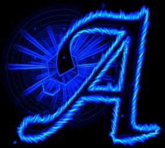

|  |
Oooops! What the hell happened here? Your box is 0wn3d by Atlantas Crew?? I think the sysadmin is in real trouble. And that's because your security is lame. You have to close those backdoors before someone will mess your system. And I mean real mess and not this deface with your web site.
[Atlantas Crew] |